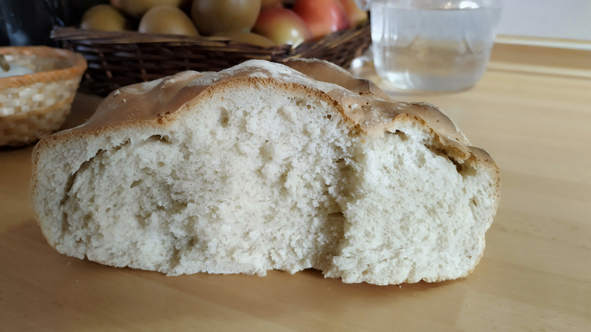

INGREDIENTES
- 500 g de harina de fuerza
- 15 g de levadura fresca
- 275 ml de agua (vaso grande casi lleno)
- 1 chorrito de aceite de oliva virgen extra
- Sal
ELABORACIÓN
Colocamos la cuchara MamboMix.
Introducimos dos tercios del agua, el aceite de oliva y la levadura desmigada en la jarra:
>> 1 min, vel-2, temp-37ºC, pot-2
En el tercio de agua que queda en el vaso ponemos 4 pizcas de sal y diluimos.
Agregamos al vaso de la Mambo la harina y el agua salada y amasamos:
>> 4 min, vel-2
Colocamos la masa en una bandeja de horno con papel de horno untado de aceite, hacemos unos cortes en la superficie con un cuchillo afilado y espolvoreamos un poco de harina. Dejamos reposar 30 minutos.
Calentamos horno a 225 ºC y horneamos durante 45 minutos aproximadamente. Ponemos la bandeja en la parte de abajo del todo y ponemos un cacharro de barro con agua sobre la rejilla en la parte superior del horno.
Dejamos enfriar el pan fuera del horno sobre una rejilla.
- © luishemar
- Design: HTML5 UP